Start and home

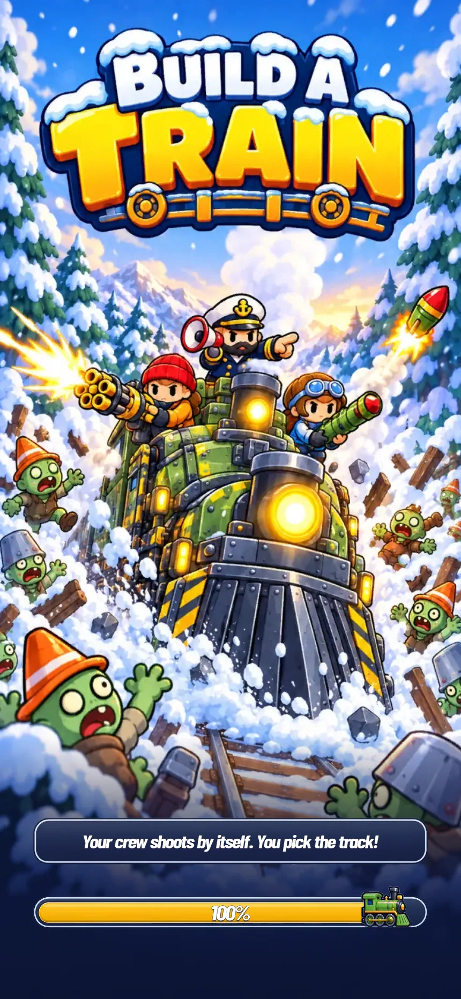
1Loading
Every start. The splash art, one tip line and the loading bar with the train running along it.
Capture 00-loading
Code UI/Tree.cs BuildLoading

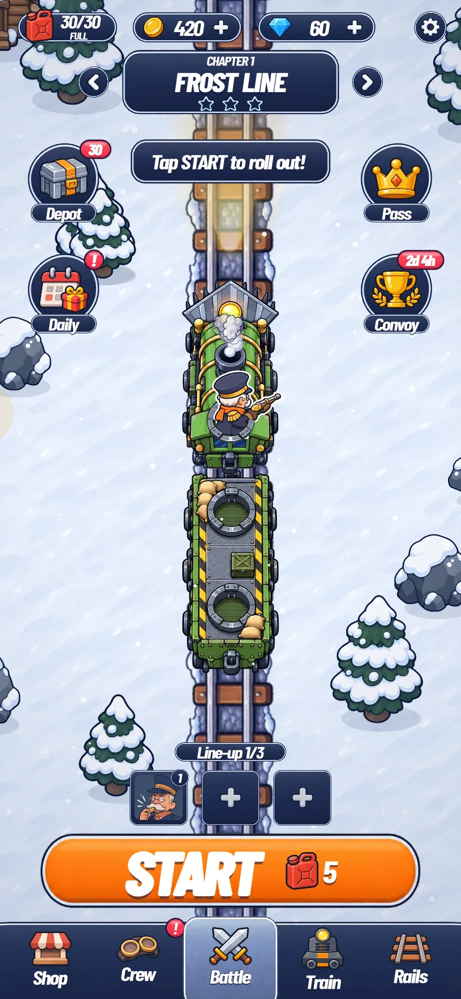
2Home (first visit)
Home on a new save, with the 'Tap START to roll out!' toast shown before the first run. Top: fuel, coins, gems, settings. Chapter name with arrows. Sides: Depot, Daily, Pass, and Convoy (opens the Rails tab). The line-up of riders on the roof, START (costs 5 fuel), and the bottom tabs Shop, Crew, Battle, Train, Rails.
Capture 01-lobby
Code UI/Lobby.cs ShowLobby, UI/Tree.cs BuildLobby

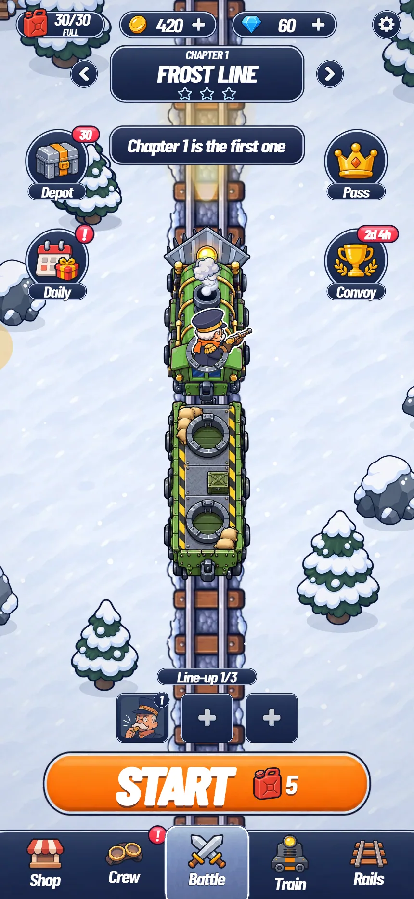
3Home with a toast
Tapping the chapter's left arrow. Toasts are the short dark labels under the chapter name; the full list of them is at the end of this page.
Capture 28-toast
Code UI/Lobby.cs BindLobby, UI/UiFx.cs Toast

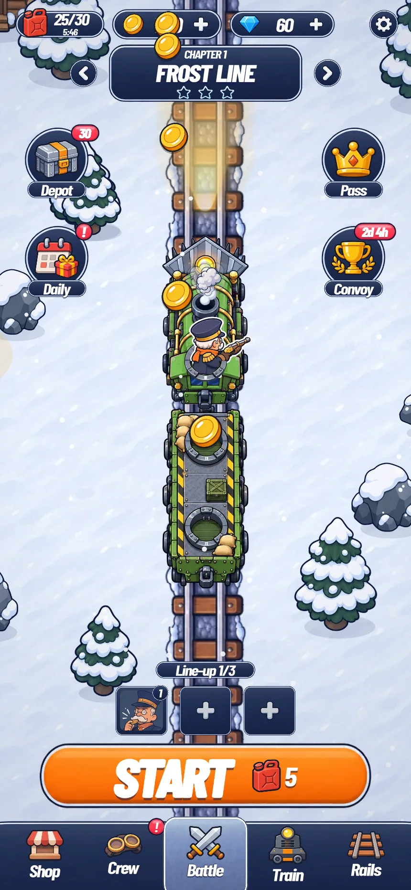
4Back home after a run
After Back to depot on Run Over (or Continue on Victory): home again, with the run's coins flying into the coin counter and 5 fuel spent.
Capture 19-back-lobby
Code UI/Lobby.cs ShowLobby, UI/Pages.cs Gain

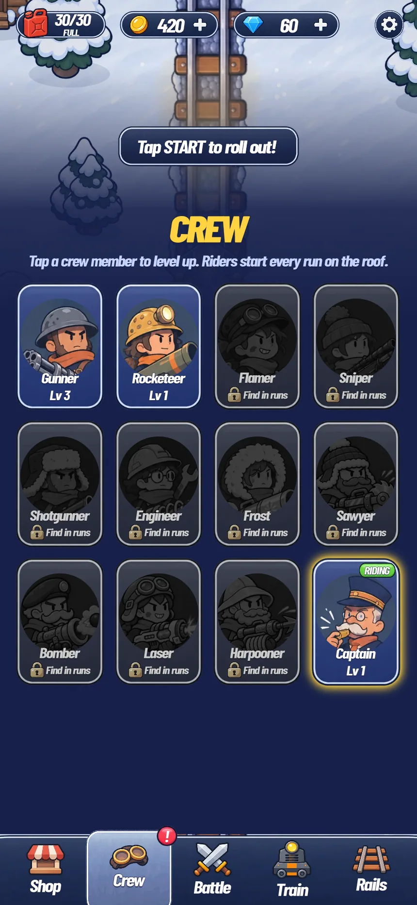
5Crew tab
Bottom bar, Crew. Every crew member: the ones you have show their level, the locked ones say 'Find in runs'. Tap a card to open its popup.
Capture 02-crew
Code UI/Pages.cs CrewPage

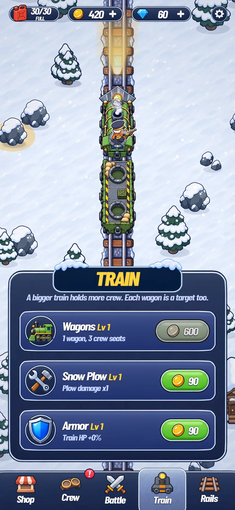
6Train tab
Bottom bar, Train. Upgrades bought with coins: Wagons (more crew seats), Snow Plow (plow damage), Armor (train HP).
Capture 03-train
Code UI/Pages.cs TrainPage

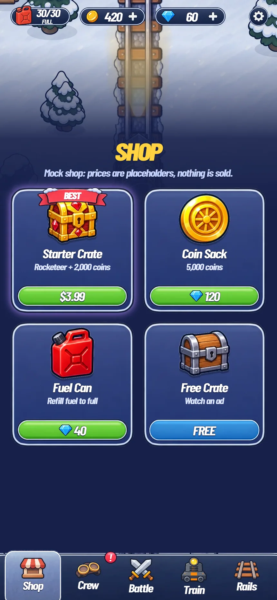
7Shop tab
Bottom bar, Shop. A mock shop with placeholder prices. The money offer (Starter Crate) does nothing; the gem offers (Coin Sack, Fuel Can) and the Free Crate (an ad, 150 coins) work.
Capture 04-shop
Code UI/Pages.cs ShopPage

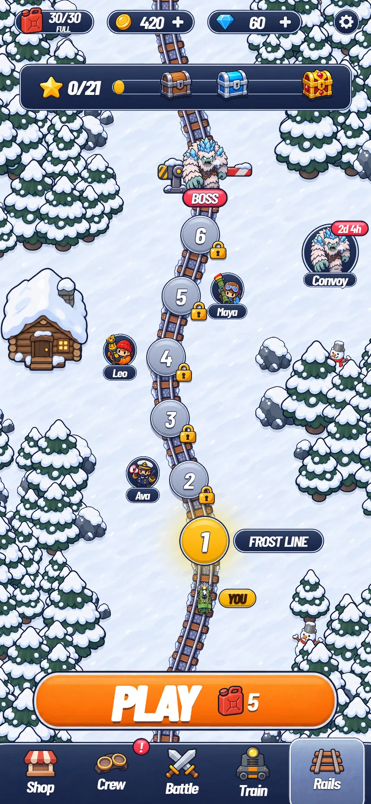
8Rails tab (stage map)
Bottom bar, Rails. The chapter's stations as a scrolling map, the Yeti King boss after station 6, and the star chests along the top bar. Tap the current station or PLAY to start a run.
Capture 05-rails
Code UI/Pages.cs RailsPage
Home popups

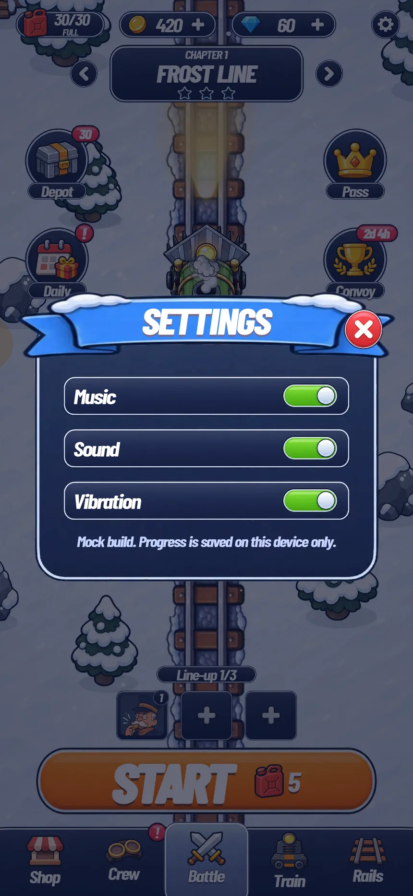
9Settings
The gear at the top right of home. Music, Sound and Vibration switches; progress is saved on the device only.
Capture 06-settings
Code UI/Popups.cs Settings

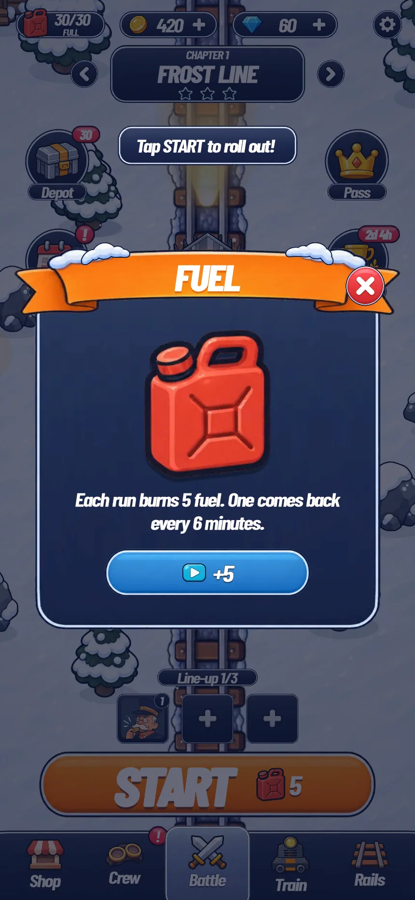
10Fuel
Tap the fuel counter at the top left, or START with less than 5 fuel. Each run burns 5 fuel; one comes back every 6 minutes. The +5 button plays an ad.
Capture 21-fuel
Code UI/Popups.cs FuelPopup

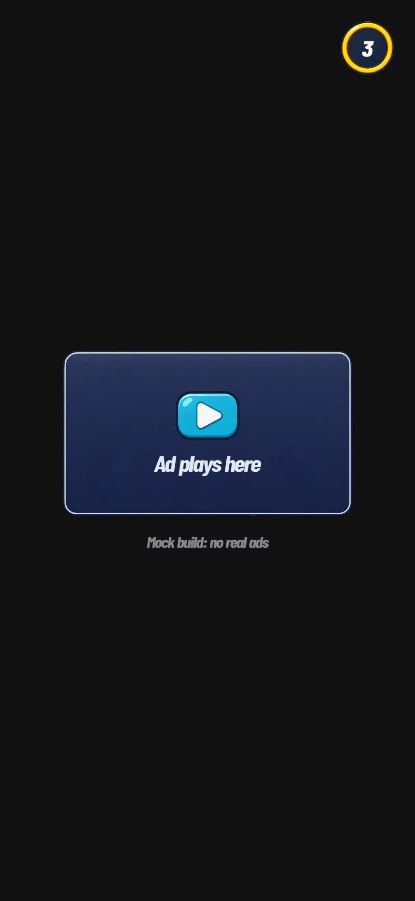
11Ad placeholder
Any ad button (fuel +5, depot x2, revive, coins x2, the shop's Free Crate). A 3-second stand-in: this build shows no real ads.
Capture 22-ad
Code UI/UiFx.cs FakeAd

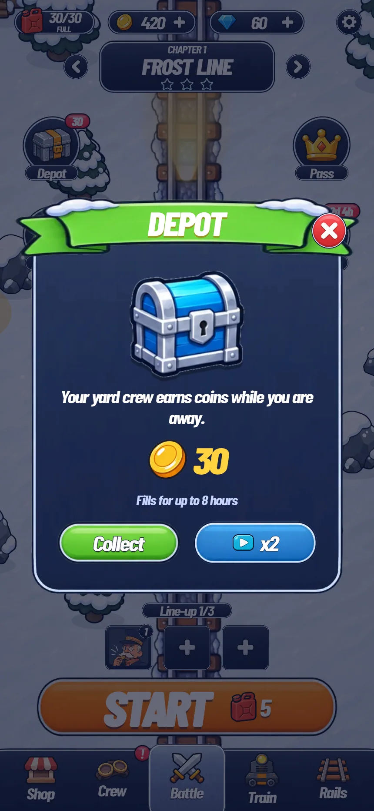
12Depot
The Depot button on the left of home. The yard crew earns coins while the player is away, up to 8 hours. Collect, or x2 with an ad.
Capture 23-depot
Code UI/Popups.cs DepotPopup

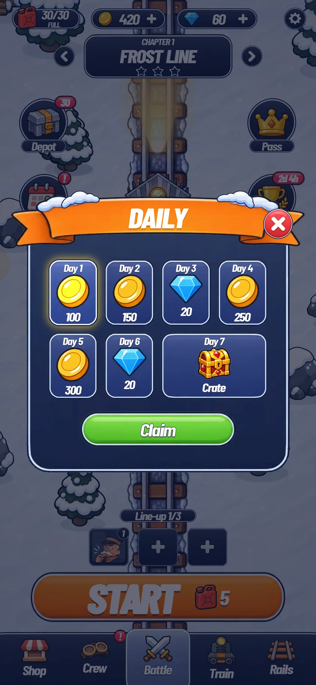
13Daily reward
The Daily button on the left of home. Seven days of rewards (coins, gems, a crate on day 7) and Claim.
Capture 24-daily
Code UI/Popups.cs DailyPopup

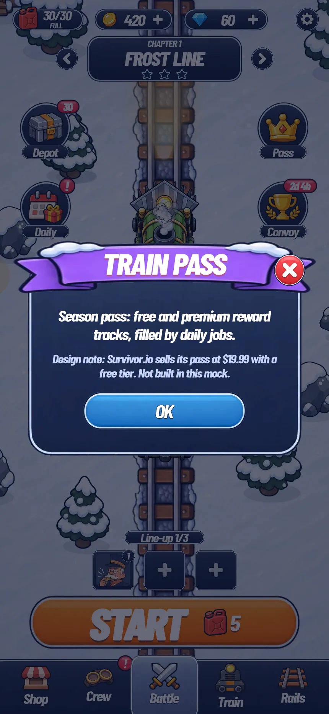
14Train Pass
The Pass button on the right of home. A design note only: a season pass with free and premium reward tracks is not built in this mock.
Capture 25-pass
Code UI/Popups.cs PassPopup

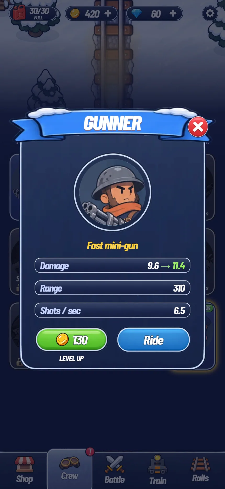
15Crew member (owned)
Crew tab, tap a crew member you have. Damage, range and shots per second (with the next level's value), the level-up price in coins, and Ride to put them in the line-up.
Capture 26-crew-gunner
Code UI/Pages.cs CrewPopup

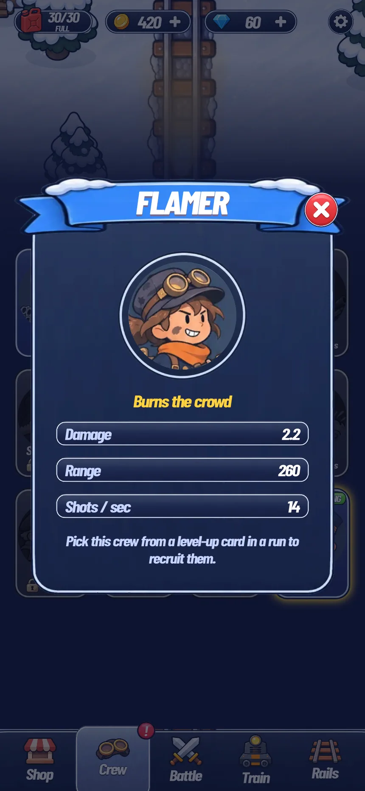
16Crew member (locked)
Crew tab, tap a locked crew member. The same stats, and a note that they are recruited by picking them from a level-up card in a run.
Capture 27-crew-locked
Code UI/Pages.cs CrewPopup
In a run

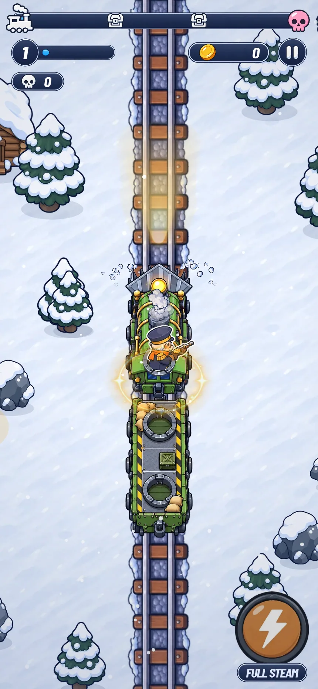
17Run HUD
After START. Top: the stage progress bar with its chest stops, the player level and XP bar, kills, coins and pause. Bottom right: the FULL STEAM button; once it has filled, a tap gives 5 seconds of double speed with the crew firing 1.5 times as fast. The crew on the roof shoot by themselves.
Capture 07-run
Code UI/Tree.cs BuildHud, UI/RunScreens.cs OnHud

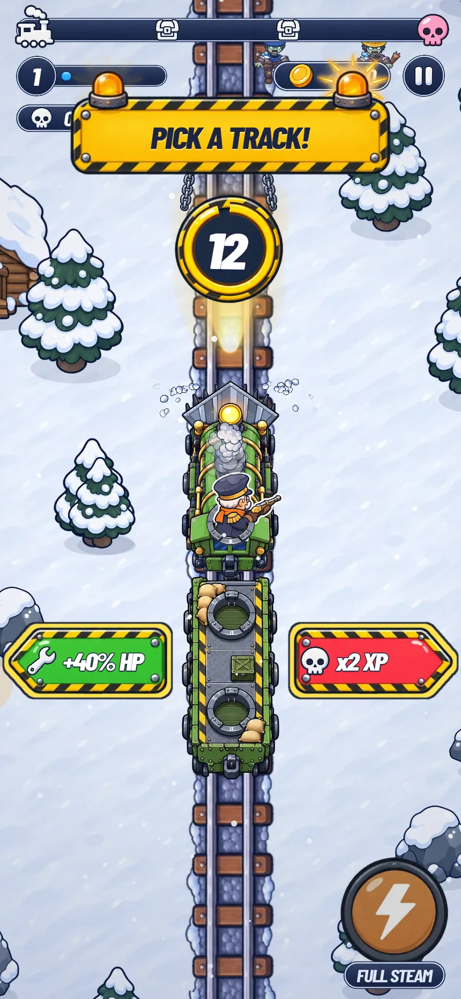
18Fork: pick a track
Some distance before each fork. The sign drops in with a countdown in seconds and two side signs with what each track gives (repair, coins, double XP, a rare card). Tap a sign, or the left or right half of the screen. If time runs out the left track is taken.
Capture 08-route
Code UI/RunScreens.cs ShowRoutes, RouteTick

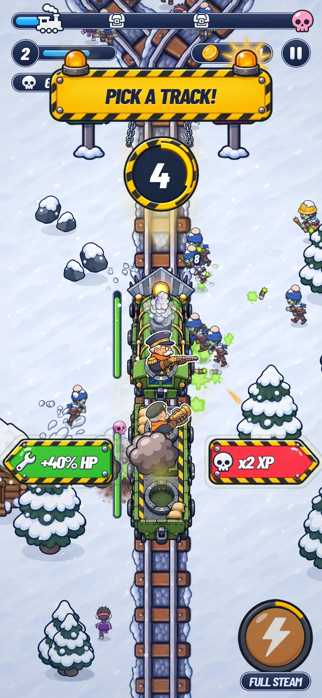
19Fork, closer
The same fork a few seconds on: the countdown keeps running and the zombies keep coming. Under 3 seconds the clock turns red and shakes.
Capture 09b-chosen
Code UI/RunScreens.cs RouteTick

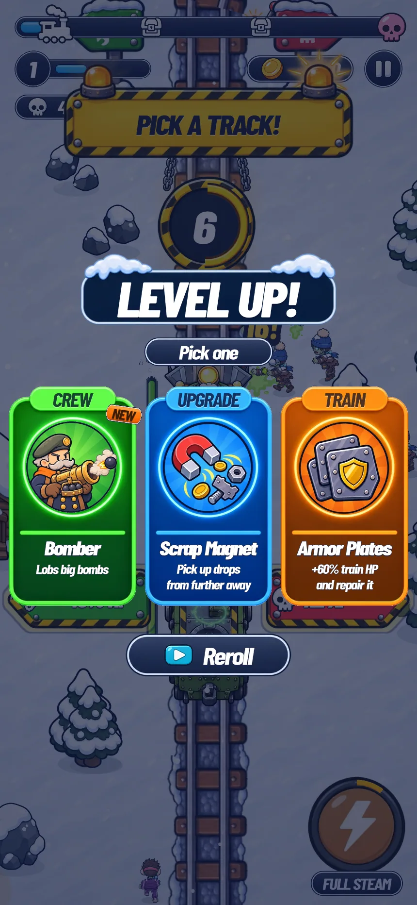
20Level-up during a fork
A level-up can come while the fork sign is up; the run pauses under the cards.
Capture 09-route-late
Code UI/RunScreens.cs ShowCards

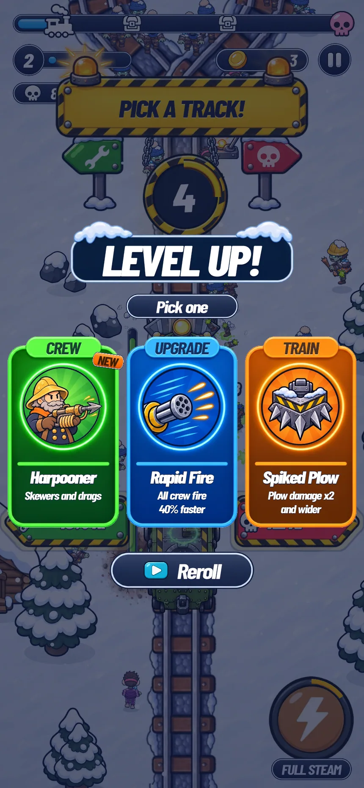
21Level up: pick one
Each time the XP bar fills. Three cards: green CREW (recruit or level a crew member), blue UPGRADE (a boost for all crew), orange TRAIN (wagons, plow, armor). Reroll (once per run) plays a short ad and deals three new cards.
Capture 10-cards
Code UI/RunScreens.cs ShowCards, CardEl, Reroll

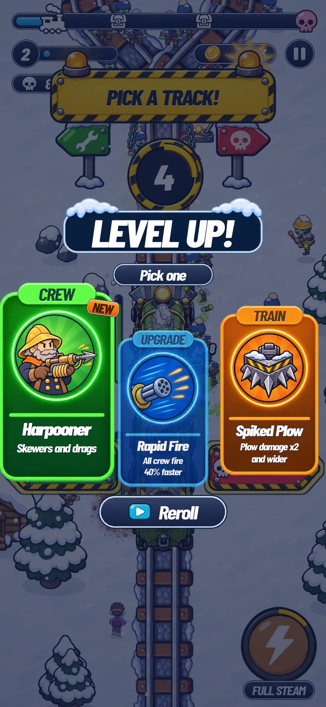
22Picking a card
The tapped card grows while the other two fade out, then the run carries on.
Capture 10b-pick
Code UI/RunScreens.cs PickCard

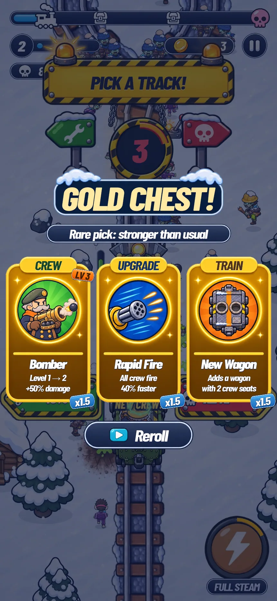
23Rare pick (gold cards)
After a gold chest, or the Armory track at a fork. Gold cards, stronger than usual; each card shows its level step or effect.
Capture 11-rare
Code UI/RunScreens.cs ShowCards

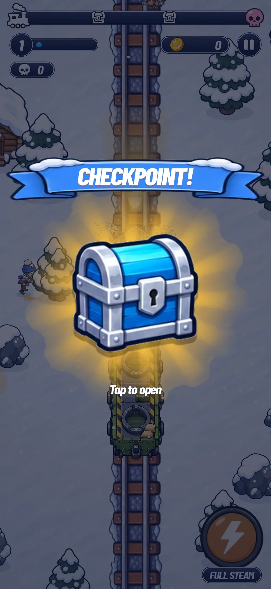
24Checkpoint chest (silver)
The first chest stop on the progress bar. Tap to open: 30 coins.
Capture 12a-chest-checkpoint
Code UI/RunScreens.cs OnChest, ChestOpen

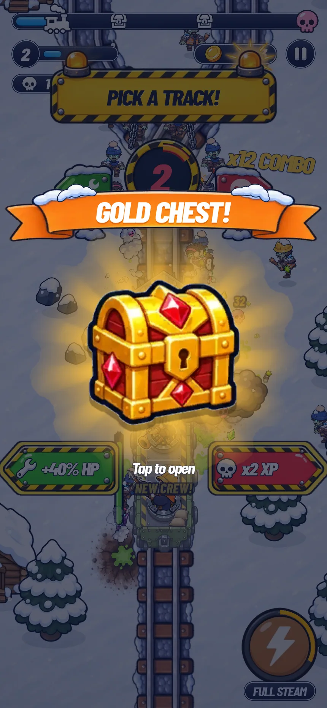
25Gold chest
The later chest stops on the progress bar. Tap to open: 60 coins, then a rare pick.
Capture 12-chest
Code UI/RunScreens.cs OnChest, ChestOpen

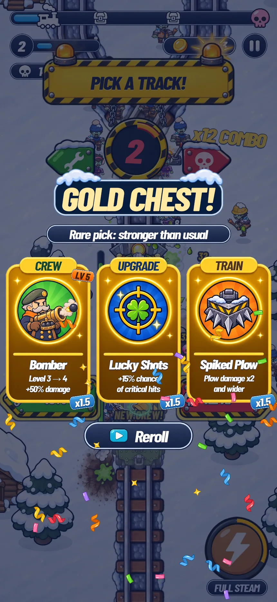
26After the gold chest
The coins burst out and the rare pick of three gold cards comes up.
Capture 13b-chest-coins
Code UI/RunScreens.cs ChestOpen

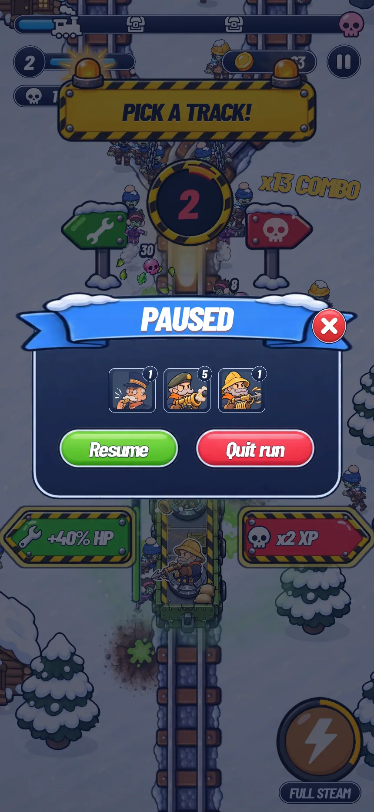
27Paused
The pause button at the top right. Shows the riders and their levels, Resume, and Quit run.
Capture 14-pause
Code UI/RunScreens.cs PauseMenu

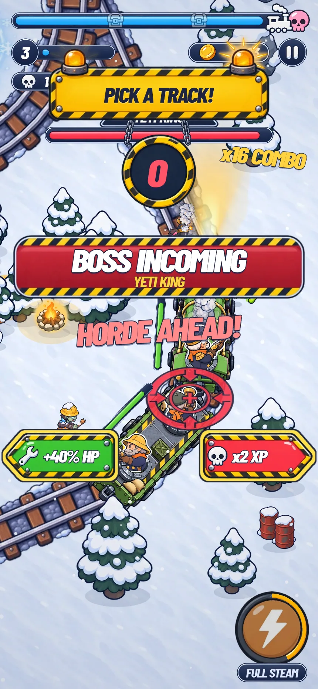
28Boss incoming
Before the boss loop at the end of the stage: the BOSS INCOMING / YETI KING warning. The red banner in this shot is a separate one, HORDE AHEAD!
Capture 15-bosswarn
Code UI/RunScreens.cs BigWarn, OnBoss

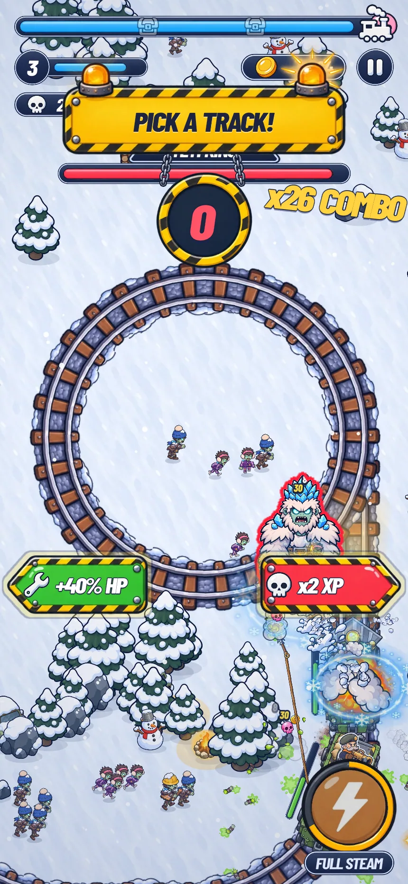
29Boss fight
The train circles the loop while the Yeti King attacks; the boss's health bar sits under the progress bar.
Capture 16-boss
Code UI/RunScreens.cs ShowBossBar
End of a run

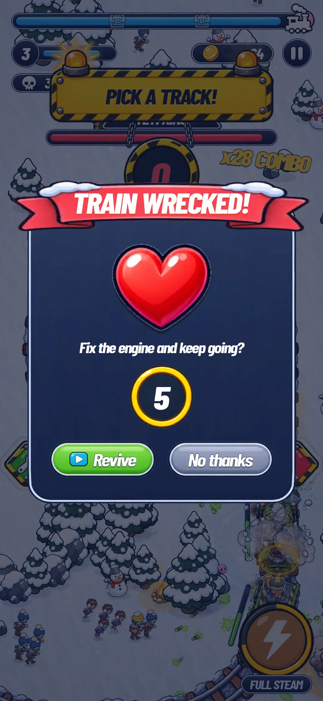
30Train wrecked (revive)
When the train's HP runs out. A 5-second countdown: Revive plays an ad and puts the train back on the track; No thanks, or the countdown ending, goes to Run Over.
Capture 17-revive
Code UI/RunScreens.cs LoseScreen

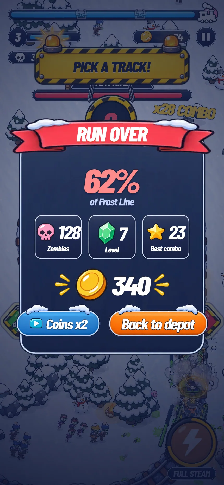
31Run over
After the revive box. How far along the stage the train got, zombies killed, level reached, best combo, and the coins won. Coins x2 plays an ad; Back to depot goes home.
Capture 18-lose
Code UI/RunScreens.cs EndRun

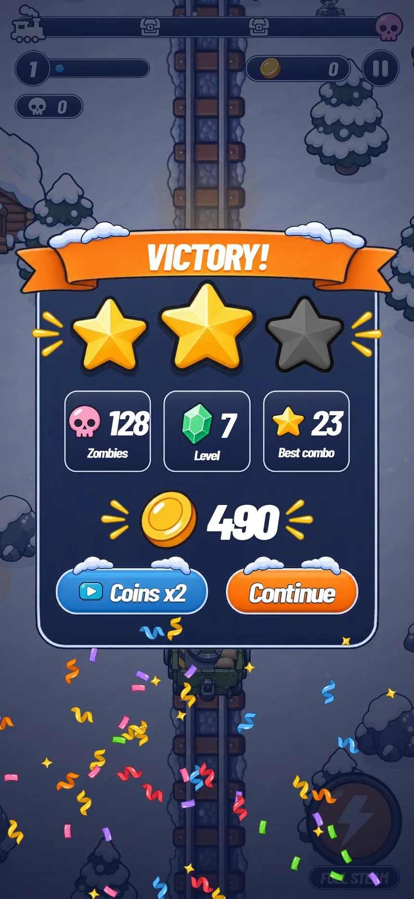
32Victory
After beating the boss. Stars by the engine's HP left (over 66% three, over 33% two, else one), the same numbers as Run Over, the coins won, Coins x2 (ad) and Continue.
Capture 20-win
Code UI/RunScreens.cs EndRun
Toasts and banners
Short messages that are not screens of their own. Toasts are the small dark labels; banners are the big coloured words across the middle of a run.
| Kind | Text | When it shows | Code |
|---|---|---|---|
| Toast | Tap START to roll out! | Home, on a new save before the first run | UI/Lobby.cs ShowLobby |
| Toast | Chapter 1 is the first one | Home, the chapter's left arrow | UI/Lobby.cs BindLobby |
| Toast | Clear Frost Line to open Chapter 2 | Home, the chapter's right arrow | UI/Lobby.cs BindLobby |
| Toast | Not enough coins | Crew popup level-up, or a Train upgrade, without the coins | UI/Pages.cs CrewPopup, TrainPage |
| Toast | Someone has to ride! | Crew popup, taking the last rider out of the line-up | UI/Pages.cs CrewPopup |
| Toast | Not enough gems | Shop, a gem offer without the gems | UI/Pages.cs ShopPage |
| Toast | Mock build: no real purchases | Shop, an offer with a money price | UI/Pages.cs ShopPage |
| Toast | Yeti King waits after station 6 | Rails map, tapping the boss | UI/Pages.cs RailsPage |
| Toast | Clear station N first | Rails map, tapping a station that is not open yet | UI/Pages.cs RailsPage |
| Toast | N stars opens this chest | Rails map, tapping a star chest | UI/Pages.cs RailsPage |
| Toast | Convoy: link up with 3 trains to beat the Yeti King. A design idea, not in this mock | Rails map, the Convoy button | UI/Pages.cs RailsPage |
| Toast | Auto-picked the left track | A fork whose countdown ran out | UI/RunScreens.cs OnChosen |
| ROLL OUT! | The start of every run | UI/RunScreens.cs StartRun | |
| REPAIR YARD / SUPPLY DUMP / HORDE ROAD / ARMORY | The track taken at a fork | UI/RunScreens.cs OnChosen, Game/Data.cs ROUTES | |
| DOUBLE XP! | Entering the Horde Road | Game/Run.Spawn.cs | |
| TRAIN REPAIRED! | Entering the Repair Yard | Game/Run.Spawn.cs | |
| HORDE AHEAD! | A big zombie wave | Game/Run.Spawn.cs | |
| ◀ AMBUSH LEFT / AMBUSH RIGHT ▶ | Zombies from one side | Game/Run.Spawn.cs | |
| BRUTE INCOMING! / TWO BRUTES! | A brute (big zombie) wave | Game/Run.Spawn.cs | |
| NEW WAGON! | A New Wagon card adds a wagon | Game/Run.Shots.cs | |
| FULL STEAM! | Tapping the full FULL STEAM button | UI/RunScreens.cs BindInput | |
| BOSS DOWN! | The Yeti King beaten | UI/RunScreens.cs OnBossDown | |
| BACK ON TRACK! | After a revive | UI/RunScreens.cs LoseScreen |